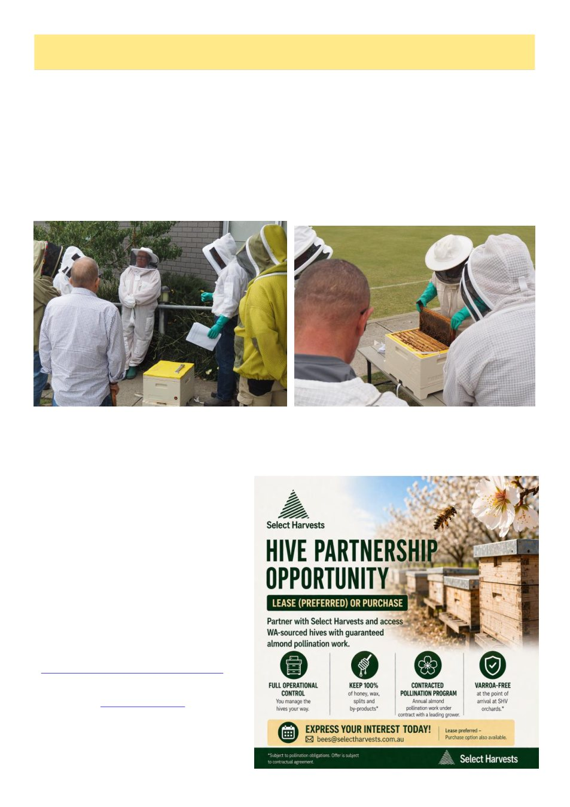

June 2026
11
Bendigo Branch Report
Bendigo Branch now proudly has three varroa specialists that are dedicated to educating our members and to pass
on vital information to our club. VAA kindly hosted another varroa specialist workshop at the Croquet Centre in
Cairnlea in early May, which we all attended. The focus was on recreational and hobbyist beekeepers which fits
right in with the majority of our demographic.
We were reminded how to properly show our members to do an alcohol wash (or soapy water wash) by Tony
Wilsmore. Ashton Edgely from Ag Vic Apiary team talked to us on the state Victoria is in at the moment with var-
roa mite and how important our vigilance must be to manage and control the situation. Controlling the spread of
disease and pests between hives and different apiaries is critical so cleanliness and hygiene of tools & PPE is a prior-
ity.
Andrew Wootton went through the different miticides we now have available for use in Victoria. The mite re-
sistance being shown in Queensland and northern NSW shows we must be on top of each miticide (either synthetic
or organic) and understand when and how to use them to prevent resistance in Victoria. We then had a practical sce-
nario outside watching each treatment being placed into the live hives.
We had scenarios presented to us where, as a group we discussed how we could treat the hive at different times of
the year, which I found really helpful. We all retain different information so to hear it discussed in a working group
helped bring to mind other aspects and options we may not have thought about.
Paul McCrory gave us a very interesting presentation on anaphylaxis, teaching us what signs to look for and how
to respond to the situation. EpiPens of course are a must have in the beekeeper‘s toolkit, I cannot stress this enough.
I would like to thank the VAA for running
this workshop to help further educate each of
us. The more information we get and pass on,
the better chance we have of managing through
this tough first stage of the mites in our state. I
look forward to more of these types of educa-
tional days where we gather together to try and
conquer our situation.
Alex Perera from the Ag Vic Chemical Team
presented to us as our guest speaker at our May
meeting. She spoke about different chemical
treatments to use in our hives to treat Var-
roa. The right and wrongs of chemical use, the
regulatory framework and who to contact. This
was the first presentation from the chemical
team and Alex wants us to contact their team if
we have any queries
(chemical.standards@agriculture.vic.gov.au) .
They will be working closely with the VAA to
create an industry plan.
Check out www.apvma.gov.au for any fur-
ther information. We have invited Alex back to
our annual Field Day so it will be interesting to
see how the industry plan is working.
Angelique Perry